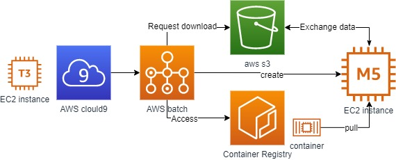

Welcome to the Vulture tutorial
The content of this tutorial is derived from a tutorial Nextflow with Batch. We changed the goal to run our Vulture pipeline, which we will run locally in containers and submit locally to AWS Batch.
Overview
In this tutorial, you will get hands-on experience with Vulture pipeline. The goal of this tutorial is to get familiar with using Vulture and its pipeline architecture based on the following AWS services.

- AWS EC2: cloud server instances
- AWS EC2 Spot Instances: EC2 instances benefit from unused EC2 capacity
- AWS Batch: Job scheduler of containerized workflow in batch
- AWS S3: Object storage
Other concepts
- Docker: container services
- Nextflow: language reproducible scientific workflows